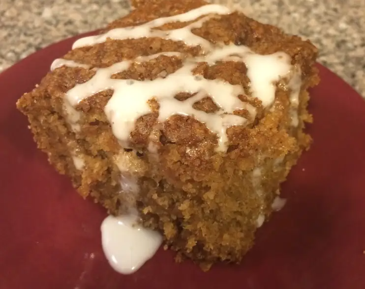

Vegan Applesauce Cake

Description
This is my favorite recipe for Vegan Applesauce cake. It is delicious
because it is not too sweet! If you have additional apples, I recommend
adding them to the cake. They make the cake extra delicious!
Ingredients
- 1/3 cup oil
- 3/4 cup sugar
- 1 1/2 cups unsweetened applesauce
- 2 cups flour
- 1/2 teaspoon salt
- 1 1/2 teaspoons baking soda
- 1 teaspoon cinnamon
Steps
- Preheat oven to 350 degrees F
- Mix oil and sugar; then add applesauce.
- Combine dry ingredients and add to applesauce mixture; beat until smooth.
- Pour into a greased and floured 8-inch square baking dish.
- Bake for 40-45 minutes
- Use icing if desired.
Source
Easy Vegan Applesauce Cake (Food.com)